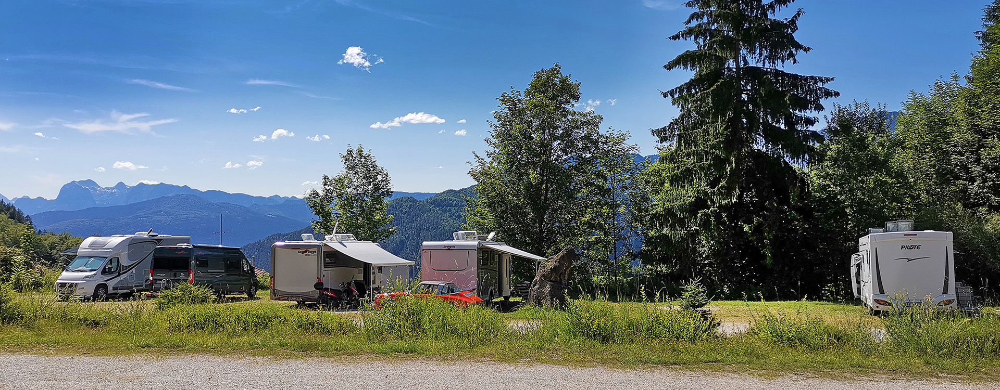
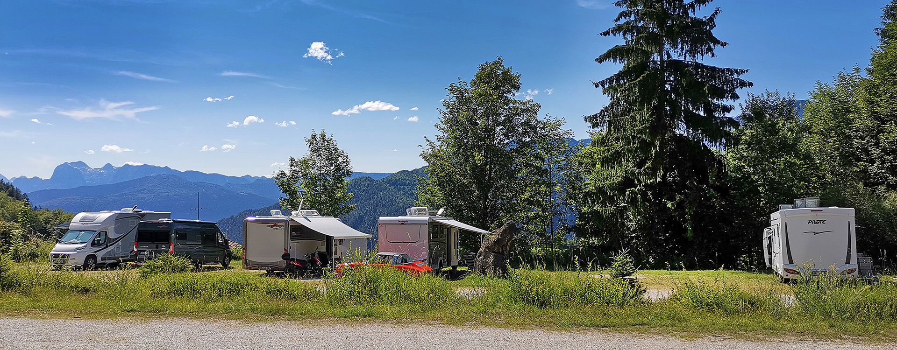
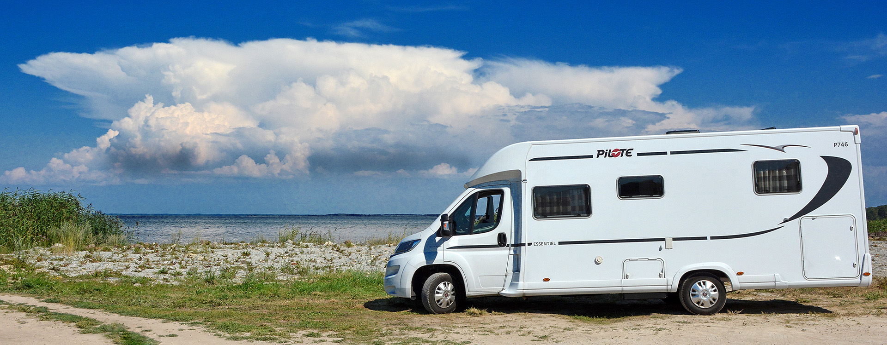
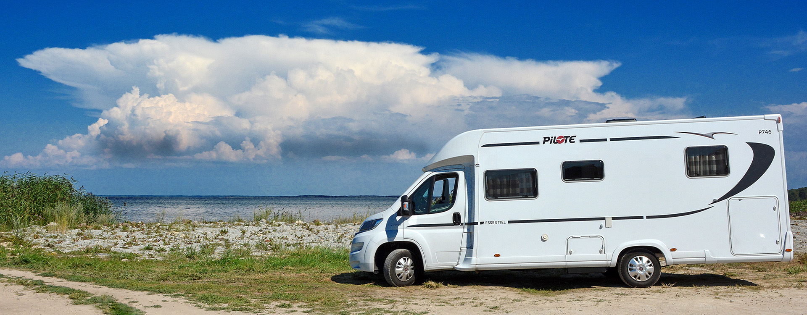
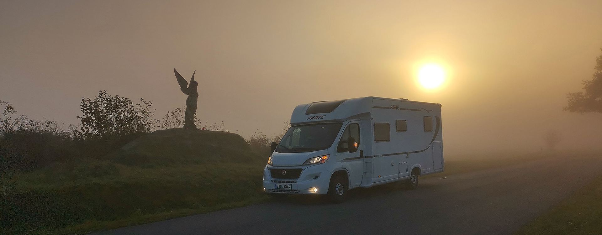
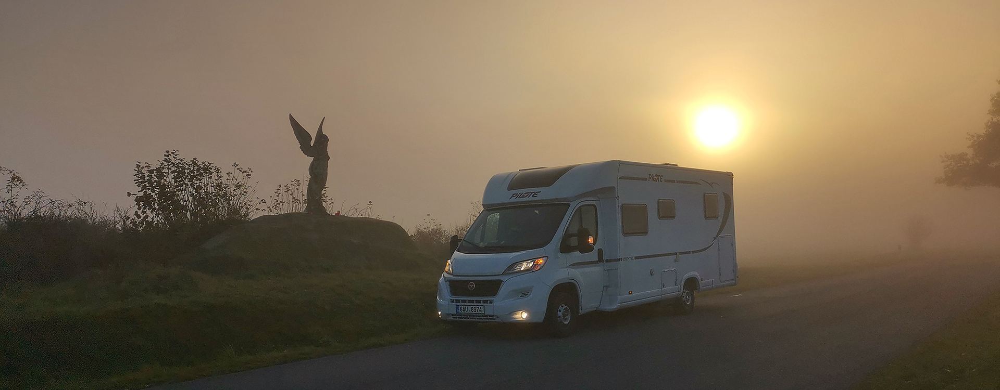

 



 



24.11.2019 - Při výběru srovnávejme srovnatelné! 1.část
Na letošní největší české výstavě, na Caravaningu Brno 2019 jsem strávil skoro jeden a půl dne. Byl jsem sám, bez ženy, a tak byl čas na poměrně velmi detailní prolézání jednotlivých modelů, porovnávání výrobců, hodnocení kvality zpracování, zkoumání drobných konstrukčních řešení, atd. atd. O tom ale tento článek nebude. Měl jsem totiž možnost (jsem tak trochu šmírák, sociologie a mezilidské vztahy tvoří i část mé profese) po celou dobu poslouchat i komentáře a rozhovory jednotlivých návštěvníků, které spolu v tom kterém autě vedli. Možná se teď některých z vás dotknu ale globálně vzato, musím v rámci České republiky prohlásit - jsme zatím národ začátečníků a karavaningových zájemců více méně nepoučených. Je to samozřejmě naprosto přirozený jev - karavaning je u nás na vzestupu a z původní hrstky zanícených šílenců se pomalu stává armáda lidí, kterým tento způsob trávení volného času učaroval. A to je moc dobře. Stále více a více zájemců si chce pořídit své nové a mnohdy první auto či karavan. Rozhodovací proces je u každého zájemce jiný. Proto jsem přede dvěma měsíci nabídl poměrně obsáhlý článek "Jaký si vlastně pořídit obytňák", který měl být takovým pokusem o stručného rádce při výběru. No a v jeho čtvrté kapitole jsem se trochu otřel o téma, které bych chtěl v tomto článku podrobněji rozebrat. Rozhovory lidí ve vystavovaných autech totiž jasně ukázaly, že při výběru nesrovnáváme srovnatelné.
{kind=link}
Pojďme se naučit objektivně srovnávat výbavu a kvalitu. Umět posoudit, co nám výrobce za tu skvělou akční cenu vlastně nabízí a jestli to ve skutečnosti není horší nabídka, nežli u toho "tichého" stánku hned vedle. Mrkneme se na rozdíly, zkusíme si je porovnat a také i finančně ohodnotit. V článku se budu pohybovat v neprodávanějších kategoriích aut. Tedy necháme být luxusní auta typu Concorde, Phoenix či Morelo (tam těch kompromisů a "chytáků" už zas tolik není), vynechám terénní speciály (ty jsou konstrukčně velmi rozdílné a většinou pečlivě stavěny dle konkrétních požadavků). Zaměříme se na auta, která můžeme nazvat "ty velké bílé krabice". Na první pohled skoro stejné, v detailním rozboru propastně rozdílné.
Docela náročné téma na jeden článek, ne? Proto bude mít článek dva díly: srovnání vnější části obytňáků a ve druhém díle budeme porovnávat vnitřní vybavení a interiér. Takže se nebudeme zdržovat a jdeme na to. A na závěr druhé části článku bych zájemcům nabídl pomůcku: srovnávací metodickou tabulku, až půjdete "svého" mazlíka vybírat.
Ceny: Uváděné ceny berte jako "vážený průměr" z nabídek prodejců. Každý z nich si to které příslušenství může nacenit trochu jinak a navíc jsou tu ty "výhodné balíčky výbavy". Přiznám se, že jsem jejich velký odpůrce. Není to totiž nic jiného, nežli marketing a způsob, jak vytvořit zdání atraktivní nabídky. Ale o tom někdy příště. I když, jeden příklad za všechny bych tu z letošní nabídky jednoho velmi známého výrobce měl i pro teď:
{kind=link}
"Drive Easy Paket 1.1". Tento honosně znějící název vám za pouhých 11.600Kč nabízí mlhovky, kontrolu tlaku v pneu a "zesílený akumulátor". ALE: kontrola tlaku v pneu je dnes už standardní a dle EU povinné vybavení výrobce podvozku už z výroby. Zesílený alternátor dává Fiat běžně na své speciální chassis CCS, určené pro obytňáky (protože ho potřebují), takže za bezmála 12000Kč si u tohoto výrobce koupíte navíc mlhovky (v běžné ceně okolo 5000Kč), což mimochodem dokládá i údaj o přidané váze. Plus dva kilogramy je tak zhruba hmotnost těch mlhových světel vč. montážních komponentů. Můj osobní názor je: utíkejte od prodejců, jejich ceník se hemží "pakety". Je to jen hra na chamtivost a důvěřivého zákazníka. Buďto ať je to v základní ceně nebo ať každý komponent dodatečné výbavy má vlastní cenovku. Takový prodejce se pak nesnaží dělat ze zákazníků blbce.
Pro tento článek tedy jen řeknu, že ceny uváděné dále za jednotlivé komponenty, se pokouší reflektovat jejich skutečnou hodnotu na trhu.
1) Obcházíme auto z vnějšku
a) kabina řidiče
Stranou necháme přímo výrobce podvozku. Nechci se pouštět do plamenných diskuzí, jak velké rozdíly jsou mezi Fiatem Ducato, Peugeotem Boxerem, Renaultem Traficem, Fordem Transitem, Volkswagnem Crafterem, atd. atd. Berme to tak, že jsou to auta, mají nějakou trochu rozdílnou cenu, nějaké vlastnosti a někomu vyhovuje to či ono. Toto téma bude mimo, stejně jako porovnávání aut podle délky či provedení (alkovna, polo či plně intergovaný, či van). Bylo už víceméně probráno ve výše zmíněném článku.
Začneme tím, že se podíváme na předek auta. Zkontrolujte hlavně dvě položky. Přítomnost LED denního svícení a případné vybavení mlhovkami.
{kind=link}
Jednoduché sdružené přední svítilny mohou mít denní svícení řešené pouze běžnými žárovkami. Elegantní a praktický LED pásek se může jako příplatková výbava pohybovat někde okolo 8000Kč. Přidání mlhových světlometů levněji, než tak za 3-5000č také pravděpodobně nepořídíte. Takže finanční rozdíl mezi levým a pravým autem na obrázku je jen na těchto dvou položkách hned přes 12.000Kč.
Stranou nechám možné příplatky např. za "chrom paket" a tím i hezčí masku chladiče auta. To už je na každém z nás ale ta kvalitu auta nedělá.
b) co sledovat na podvozku
Na podvozku neboli chassis, které pochází od výrobce užitného auta se podívejte cca na tyto oblasti
Motor: i když např. "koncernová" kabina značek Fiat/Peugeot/Citroen vypadá prakticky totožně, motory jsou to, proč je za chassis rozdílná cena. Takže rozhodnutí o podvozku, parametrech a výkonu motoru nechávám na každém z vás. Dlouhá léta byl podvozek Fiat Ducato CCS absolutním vládcem světa obytňáků. V poslední době je trend používat i jiné platformy. Seřazeno podle ceny podvozku od nejlevnějšího po nejdražší by mi to cca vycházelo takto: Ford - Peugeot - Citroen - Fiat - VW - Mercedes. Výše už jsou i Iveco a MAN ale to jsme u vyšších hmotnostních tříd.
Podívejte se také na objem nádrže na naftu. Všeobecný standard je 90 litrů. Někde dostanete za příplatek okolo 5000Kč nádrž 120litrů (pozor, je to i plus 25kg hmotnosti a to bez nafty), někde ale musíte 3000Kč doplatit i na tu 90ti litrovou, protože v základu je jen 75litrů! Takže opět trochu kontrolujte a počítejte.
Převodovka: Může být běžná manuální, většinou šestistupňová. O stupeň výš je robotizovaná, většinou také šestistupňová a o další stupeň nahoru se nachází plně automatická. V dnešní době osmi nebo devitistupňová.
{kind=link}
S výhodami, nevýhodami a zkušenostmi mezi nimi jsem polemizoval v článku "Dva roky s robotickou převodovkou" a tak pro dnešek jen cenové rozdíly: na robotizovanou převodovku si připravte příplatek kolem 50.000Kč, na plnou automatiku klidně i dvojnásobek. A to jsou sakra velké rozdíly.
Kola a pneu v základní výbavě: máme auta většinou s 15" koly nebo se 16" koly. No a disky jsou buďto plechové nebo z lehkých hliníkových slitin.
{kind=link}
Je to o designu, o jízdních vlastnostech, a chce to trochu úvahy před finálovým rozhodnutí. Když z nejlevnějších ocelových 15" kol půjdete na 15" elektrony, připravte si tak 12-15.000Kč (naopak ušetříte zhruba 5kg na hmotnosti). Z ocelových 15" na ocelové 16" disky to bude stát jen o pár tisíc navíc a přechod rovnou na 16" elektrony je už tak o 20.000Kč dražší. Navíc jde nahoru i hmotnost. Některé firmy nabízejí vyšší průměry kol v sadě s pneumatickým odpružením zadní nápravy, které samo o sobě stojí tak okolo 20.000Kč. Zkušenosti s ním najdete ZDE.
Podlaha: Tady se bohužel musíte hodně ptát a zkoumat (i na druhý pohled na autě nic moc neuvidíte), přitom rozdíly jsou dost zásadní a vycházejí z filozofie výrobce obytňáků. Podlaha může být jednoduchá, dvojitá servisní nebo dvojitá Al-Ko. Ty nejlevnější modely mají jednoduchou podlahu, tedy desku s izolací různých druhů i tloušek. Veškeré rozvody (elektřina, voda, plyn, teplo) jsou pak vedeny kombinovaným způsobem. Něco v autě, prochází různě nábytkem, něco pod podlahou, různě přichycené na podvozku, více či méně vystavené vlivu počasí a marastu od vozovky při jízdě. Takže můžete najít auto, sice levné ale mající např. izolační podlahovou desku vyplněnou jen 30mm běžného polystyrénu a veškerá vedení na podvozku. Auto pak vůbec neizoluje proti zimě a poměrně rychle dorazí i problémy s těmi "energetickými" rozvody. Jsou totiž "moc na ráně". Přitom když se podíváte do ceníku výrobce, najdete jistě i možnost příplatkového "zimního paketu". No a ten jen obloží nádrže na vodu dalším polystyrénem a dovnitž nádrže dá vyhřívací elektrickou patronu. Takže nic moc ale zákazník má najednou pocit, že má "auto do zimy". V článku "Jaký si vlastně pořídit obytňák" se dozvíte víc. Ceny za lepší provedení podlahy se nedají jasně stanovit, prostě jen oddělují výrobce na ty levnější a na ty lepší. Pro názornost přidávám fotku našeho Dodíka.
{kind=link}
Můžete vidět, že naprosto všechno co Pilote dodal na podvozek Fiatu Ducato, je skryto v servisním dvojitém prostoru mezi podvozkem a podlahou obytné části. Včetně nádrží. Izolace a ochrana je pak na zcela jiné úrovni. A tak se při výběru toho "svého" mazlíka nestyďte se třeba i vlézt pod auto. Podívejte se, kde je co uchycené a jak. Stojí to za to.
Nástupní schůdek. Dveře do nástavby jsou docela vysoko a tak se nástupní schůdek, umístěný pod dvěřmi na podvozku, docela hodí.
{kind=link}
Může být mechanický (sáhnete pod dveře, rukou ho vypáčíte ven... a pak se musíte jít umýt) ale ten se dnes už moc nedělá. Vedou schůdky elektricky vysouvatelné. Jen stisknete tlačítko. No a pokud není takový elektrický schůdek přimo ve výbavě, bude vás to stát okolo 8000Kč. Takže při výběru auta koukněte pod dveře.
c) a teď se podíváme na zadek
Na zádi auta ověřte asi dvě věci:
Typ zadních svítilen: je až překvapivé, kolik i renomovaných a známých výrobců ještě pro modelový rok 2020 NEpoužívá již běžné LED provedení zadních svítilen (třeba Bürstner, Adria a další). Otevírají se tak dveře pro různé "LED Pakety", což je způsob, jak dostat ze zákaníka více peněz za dnes už standard. Můj názor je, že v roce 2019 do nových obytňáků vždy s cenovkou přes 1milion korun prostě žárovky už nepatří. Snad s vyjímkou hlavních světel ale to je také jen otázkou času.
{kind=link}
Je to nejenom o estetice ale hlavně o svítivosti, životnosti, spolehlivosti, stálosti barev, takže dohromady - O BEZPEČNOSTI. Mimochodem, když jsem už v roce 2017 vybíral u Pilote Dodíka, na celé obrovské ploše jejich expozice Caravan Salon v Düsseldorfu nebyl jediný model se žárovkami. A rozdíl mezi sdruženou koncovou svítilnou se žárovkami a LEDkami může být opět mezi 5-10000Kč (podle výrobce).
Zadní zpětná kamera: obytňáky jsou prostě velká hovada a couvání s nimi je vždy adrenalín. Ve vnějších zpětných zrcátkách toho mnoho nevidíte a tak je couvací kamera skoro nutností. A ejhle: taky veliké rozdíly mezi výrobci. I "značkovými". Takže opět krásná hra na třeba "Safety Paket". Jako že bezpečnost. Nebo krásná položka z ceníku "příprava na zpětnou kameru". Vy totiž máte tři možnosti: 1) koupit auto bez zpětné kamery (někdy si ji tam sám dodělám). 2) Máte možnost koupit auto, kde v ceníku doplňků vyberete a objednáte kameru. 3) Máte možnost koupit auto, kde je kamera prostě v základu a nic s tím neuděláte.
K první volbě: nejsem velkým přiznivcem takového toho českého BroukPytlíkovství, kdy si každý myslí, že zvládně všechno. Na to jsem už viděl mnoho vyslověně zprasených instalací. Nejprve si koupím bezdrátovou variantu. Ale obytňák je docela velký takže signál vypadává, kamera se skoro nedá použít. Tak to vezmu drátem a na vnejší plášť přichytím elektrikářskou lištu, jako kdybych byl doma. Hrozně to vypadá, nadělám všude možně díry a otvory do nástavby, prostě opět špatně. Opravdu vřele nedoporučuji.
Ke druhé a třetí volbě poznámka. Když mám možnost objednat auto bez kamery nebo s kamerou, většinou výrobce sice řemeslně čistším způsobem ale přeci jen udělá to samé co při první variantě. Prostě i při výrobě "domontuje". Ta už asi fungovat bude ale pak rozdíl mezi druhou a třetí variantou může být asi tento:
{kind=link}
A já opět vidím hromadu potencionálních problémů u řešení vlevo. Navíc (a zase si hrajeme na příplatky a pakety) příplatek za "přípravu zpětné couvací kamery" může být třeba 3-4000Kč (je to vlastně drát zepředu auta dozadu). Sama kamera stojí klidně dalších 6-10000Kč. Plus náklady na zobrazovací display. Buďto samostatný nebo musíte mít 2DIN AV jednotku. Každopádně finanční rozdíl auta bez kamery a s kamerou je na úrovni min. 12-15000Kč. Pamatujte na známe pořekadlo o tom, že "když dva dělají totéž....".
d) ještě se podíváme do plynu

Někde na vnějším plášti auta bude i schránka pro umístnění plynových lahví. I zde je prostor pro úsporu, když chcete nabídnout na trh auto co možná s nejagresivnější cenou. A protože jsem se tomuto tématu už jednou věnoval, čtenáře prosím, ať se podívá na článek "Měnit bomby nebo napevno?", není dlouhý a hned v jeho 1. kapitole je popsáno, co může v tomto prostoru najít v základním výbavě (ale taky to najít nemusí).
e) doba přeje i solární energii
{kind=link}
Některá auta nabízejí již přímo z výroby, nebo jako součást "mých oblíbených" paketů, i solární panel. Zde platí úplně to samé, co u kamer. Jsou tisíce lidí, kteří si "něco takového dodělají doma, levněji a lépe". Doma ano, levněji jen o trochu, lépe to nebude nikdy. Prostě nebude. Takže uvažujete-li o solárním panelu, pořiďte si jen přímo při nákupu auta (běžný panel s instalací a příslušenstvím) vás vyjde tak přibližně na 15-25000Kč, podle výrobce. A když pak budete chtít systém rozšířit či vylepšit, objednejte se u profesionálů. Tady se totiž bavíme o střeše, o dírách, o průchodkách a co se tam dá nadělat chyb! No a jakmile začne dovnitř zatékat, je to jistá cesta do pekel.
2) Nástavba aneb naše chajda malá
a) panely stěn
Když jsme mluvili o podvozku, resp. o možných řešení podlahové části auta a že se tím liší levný a dobrý výrobce, naprosto stejně to platí o konstrukci nástavby. O sendvičových neboli kompozitních panelech, ze kterých je naše chatka na kolečkách postavena. O základech, tedy nosné kostře, jejích druzích, výhodách a nevýhodách, pojednává také zmíněný článek "Jaký si vlastně pořídit obytňák". Dnes půjdeme hlavně po těch materiálech panelů.
{kind=link}
Na panelech můžeme rozlišovat jejich tři vrstvy: vnější ochrannou vrstvu, prostřední vrstvu izolační a pak vrstvu vnitřní, interiérovou.
Interiérová je jasná. Jsou to různé druhy dýh a fólií na vnitřní stěny a strop, nebo odolné vinylové materály na podlahu.
S izolační vrstvou si už užijeme více. Záleží na použitém materiálu a jeho tloušťce. podle kvality bych navrhl pořadí (od nejhoršího po nejlepší): skelná vata - montážní izolační pěna - běžný polystyrén - expandovaný polystyrén - elastomerická pěna - Styrofoam. První dvě jsou doménou domácích kutilů, ty další se používají i při výrobě v obytňákových továrnách. Každý výrobce může používat různé obchodní názvy těchto materiálů a tak je orientace trochu složitější. Stejně tak se nedají stanovit jednoduše ani ceny. Prostě čím to výrobce myslí vážněji co do kvality, tím používá vyšší typ izolace. Také záleží i na tloušťce materiálu. Tam jsem nějaký hluboký průzkum nedělal a tak pro případné srovnávání posloužím jen údajem z domácí stáje: Pilote používá 45mm Styrofoamu na podlahový panel a 25mm na stěny a střechu.
Na vnější ochrannou vrstvu se dá také použít různý materiál, odstupňovaný podle kvality a tím i ceny. Tady nabízím pořadí (opět od levného po kvalitní): deska ze skelných vláken (tedy něco jako laminát) - hliníkový plech - GFK polyesterové panely. Nejlevnější provedení se skelnými vlákny je poměrně náchylné na poškození, oděrky, atd. Hliník je o dost lepší, a GFK polyester je už tvrdý a houževnatý materiál, který např. při použití na střeše poskytuje např. velmi solidní ochranu proti kroupám (tzv. anti-hail roof). Když ho výrobce použije i na podlahové části podvozku, získá vysokou odolnost proti odskakujícím kamínkům a jiným nečistotám při jízdě. Je nenasákavý a vodě odolný, což na podvozku je jen dobře. A jeho použítí na boční stěny představuje asi nejvyšší současnou možnou ochranu obytného auta. Takže dobří výrobci určitě použijí polyester na střechu a podvozek a boční stěny ze stejného materiálu nabídnou za příplatek. Ten je ale docela citelný - za přechod z hliníku na polyester jen u vnějších bočních stěn si připravte tak cca 20.000Kč. Je ale pravdou, že hliníkové plechy budou o něco lehčí.
Nástavbu obytného auta lemuje ve spodní části ochranný pruh, ang. Skirt - "sukně", který může u levnějších aut být plastový, u těch lepších je hliníkový. Na třech obrázcích nahoře můžete vidět, jak různě se mohou jednotlivé sendvičové panely na nástavbě spojovat. S větší či menší pečlivostí a tím i s menšími či většími tepelnými mosty. Navíc, pečlivost a kvalita sesazení celé nástavby pak přímo ovlivňuje budoucí možnost vzniku případných netěsností a následného zatékání do nástavby.
b) vstupní dveře do nástavby
Ono se řekne "co to je, jedny dveře!" ale zrovna u této důležité části auta jsou obrovské konstrukční, kvalitativní a tím i cenové rozdíly. Cherakteristiku dveří určují následující parametry:
Velikost, resp. šířka: Dosavadní běžná šířka dveří okolo 67cm bývá v poslední době doplňována nabídkou širší verze (nazývá se třeba "XL" nebo "Premium") a ta je o 10cm širší. Pro tělnatější posádku pravé požehnání i když pro ostatní je to prostě jen větší prostor, kterým od podzimu do jara může při otevření unikat z interiéru cenné teplo.
Počet a provedení zámků: Dveře do obytňáků mohou mít jen jeden zámek nebo dva. Samozřejmě dva zámky jsou víc než jeden. Dveře při pohybech auta lépe drží zavřené, tolik se nekříží a pro zloděje jsou i komplikovanější překážkou. U levných aut může být zámek dokonce jen čistě mechanický. Tzn., že jej nelze zapojit do centrálního zamykání vozu, což je docela nepraktické. Při odchodu od auta musíte dálkou zavřít dveře kabiny řidiče a pak zvlášť ještě dveře nástavby. A nezapomenout na to. Takové levné dveře poznáte na první pohled. Jednak jsou tenké, většinou bez okna (nebo jen velmi jednoduchého) a do dveří nevede žádný elektrický rozvod. Mechanický zámek ho nevyužije. Takže opravdu zcela základní, nekomfortní řešení.
{kind=link}
Někde kvalitativně uprostřed jsou dveře třeba s jedním elektromagentickým zámkem ale bez okna, nebo s jednoduchým oknem, nebo i s dvojitým oknem ale stále jen s jedním zámkem. Cenově jsou totiž dost rozdílné a tak někteří výrobci obytňáků čarují jak mohou. Navíc se stále ještě hodně používají plastové díly (kliky dveří, blokovací vložky, apod.).
{kind=link}
Takže opravdu dobré dveře by měly mít dva elektromagnetické zámky, umožňující kompletní centrální zamykání dálkovým ovladačem, měly by mít dvojité plexi okno (s vrstvou argonu mezi skly) a měly by být vybaveny jak zatemňovací roletou do okna, tak výsuvnou moskytiérou přes celý vstupní otvor dveří. Mám tu fotku, na které takové dobré dveře jsou:
{kind=link}
Na obrázku A vidíte oba zámky, na B je vidět, že veškeré elektrické kontakty jsou vedeny elegantně dotykově a nijak tedy ve dveřích nepřekáží. Stejný model dveří je i na C ale v "XL" širokém provedení. No a na D můžete vidět, že výrobce obytňáků může zvolit jiného dodavatele dveří a i když ty budou parametrově a výbavou stejné jako ty na A/B/C, přesto jsou o jednu drobnost horší. Výrobce dveří nahradil elegantní řešení s kontakty prostou hadicí s dráty, která překáží a přímo si říká o ukopnutí či urhnutí.
Všechny ale jinak mají dvojité sklo v okně a vytahovací stínící roletku. No a asi nikoho už nepřekvapí, že cenový rozdíl mezi těmi nejjednodušími dveřmi na začátku a těmito na konci této kapitoly, se blíží 30000Kč. A dívajíc se do jednoho ceníku příplatkové výbavy čtu "moskyto vstupních dveří nástavby + 8700Kč". Takže další peníze, pokud dveřní síť proti hmyzu není v základu. Sledujete, jak se nám ty na první pohled propastně rozdílné ceny rovnají, když srovnáváme srovnatelné?
c) okna a střešní okna
I boční okna se dají namontovat naprosto rozdílných kvalit a tím i cen. Jako vždy si ukážeme výborné řešení, průměrně a jedno hrůzné. U oken začneme těmi výbornými:
{kind=link}
Všechna okna jsou nízkoprofilová, s plynulým náběhem tloušťky, takže při jízdě kladou minimální aerodynamický odpor. Projeví se příznivě na hluku a na spotřebě. Jsou přimontována do pevného hliníkového rámu, opatřena dvěma podpěrnými výsuvy a celkem čtyřmi jistícími zámky. Celý rám okna je pevně zafixován do panelu stěny a nemá proto tendenci se nijak kroutit. Gumové těsnění je ukryto v rámu, takže jeho životnost bude dlouhá. Okno je dvojité a meziprostor je vyplněn izolačním argonem.
Teď přichází střední kvalita:
{kind=link}
Rám může být ještě hliníkový nebo dokonce už i plastový. Okno "trčí" o něco více z roviny stěny, nastavuje vzduchu hned svou kolmou boční hranu a bude tak klást větší odpor protékajícímu vzduchu. Výsuvy jsou stále dva ale zámečky už jenom tři.
No a největší hrůza, kterou jsem na Caravaning Brno potkal:
{kind=link}
V panelu stěny je jen tlusté gumové těsnění, vedoucí z vnější stěny až dovnitř do interiéru. V otvoru okna je přichyceno úzkým hliníkovým páskem a několika šroubky. Celé okno visí na pantu, který je přišroubován (a doufám že i přilepen) přímo na vnější stěně obytňáku. Výsuv je jen jeden a titerný, zámky jen dva. Při jízdě vzduch, voda, sníh, atd. lítá přímo na gumové těsnění, do škvíry mezi stěnu a plastové okno. Jistý si nejsem ale tipnul bych si, že je sklo pouze jednoduché, tedy s minimálními izolačními vlastnostmi. Když ho budete chtít vyměnit, musíte vyrvat od stěny celý ten pant, co okno drží. Fakt nic moc.
Cenový rozdíl mez prvním a posledním příkladěm bude pěkných pár tisíc. Na jednom jediném okně. Každý obytňák jich má v průměru pět kusů. Tak počítejte.
I střešní okna, jak ta velká (sky-roof), tak ta malá, např. v koupelně, mohou být provedena různě.
{kind=link}
Obě střešní okna na obrázku mají zasouvací stínící roletku na jedné straně rámu a moskytiéru na druhé straně. Zde ale podobnost končí. Ta vlevo má rám roletek plastový, ta vpravo hliníkový. Když máte tu vlevo, jste v noci venku v přírodě, máte třeba zataženou moskytiéru a chcete otevřít trochu více okno, musíte moskytiéru zasunout, rukou chytit plastové madlo (jezdí plastovým kolíčkem v plastové kolejničce takže co životnost?) a otevření okna upravit. Jsou tam jen tři polohy: plně zavřeno, lehce pootevřeno a plné otevření. Po dobu manipulace vám dovnitř lítají komáři. Uživatel střešního okna vpravo nechá klidně moskytiéru být, jen vyklopí ovládací kličku a krouživým pohybem okno nastaví na libovolný úhel otevření. Okno vlevo je čiré, okno vpravo má jemnou síťovou strukturu (podobně jako zatmavení v osobním autě) stínící prudkému slunci. Atd., atd. Cenový rozdíl při stejných rozměrech okna asi 3000Kč na okno. Tedy dalších 12000Kč při průměru čtyři okna na obytňák.
d) dveře do garáže
Na dveřích do garáže (bavíme se o klasické garáži, napříč celou zadní části obytňáku) se dá šetřit dvěma způsoby: Za prvé, že v základní ceně jsou jen jedny dveře a ty druhé za příplatek (třeba 10-15000Kč) a to je sakra znát. A za druhé opět počet a provedení zámků dvěří do garáže.
{kind=link}
Zámek může být jen jeden, dva jsou samozřejmě lepší (stejné důvody jako u vstupních dveří do nástavby). No a pak je tu jeho konstrukce. Ten vlevo je klasické madlo. Zatáhnu, blokovací jazýček zajede do krabičky zámku a dveře jsou otevřené. Druhý způsob je zabouchnu dveře otočím o půl otáčky, dveře jsou zablokované. Otočím o další půl otáčku, ocelové raménko zámku se trochu přitáhne a větší silou dveře zatáhne do stěny (takže je menší pravděpodobnost průsaku vody). pak na kličku rukou zatlačím a mám zamčeno. Klíč pro zamčení potřeba není. Tady je na zámku rozdíl jen pár set korun. Ale krát dvě, resp. krát čtyři a jsme opět na rozdílu nějakých 1500Kč.
No a to pro dnešek stačí, dalo by se samozřejmě pokračovat i dál ale toto mohou být hlavní rozdíly, pro dvě stejně velké, stejně bílé, prostě "úplně stejné obytné obludy" mohou mít zcela rozdílnou cenovku. Vlastně je toho jenom půlka. O té druhé, o nástrahách v interiéru, si povíme příště. Snad dám dohromady druhou část článku v průběhu prosince.